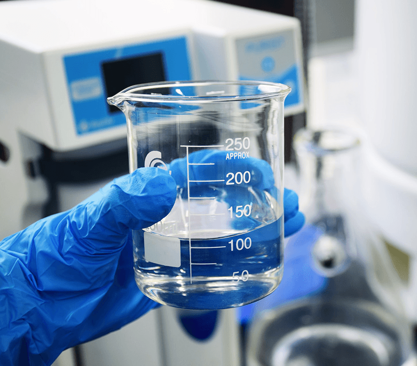

Process Development
The importance of strategic process development (PD) as a program advances cannot be overstated. It is critical to increasing yields, achieving product quality expectations, and lowering the cost of goods (COGS) while meeting clinical development milestones.
The Center for Breakthrough Medicines (CBM) has a Process Development team with unrivaled experience building and optimizing processes for commercial gene and cell therapies.
Developing Strategy
We start with a knowledge transfer of your existing process to CBM, or the development of a de novo custom bioprocess from scratch. Our PD team then develops an optimal product strategy to align processes and equipment with future pilot scale and cGMP-scale operations.
Implementing Strategy
Our viral vector process solutions are fully scalable. All upstream processes are are designed to meet safety, quality, and yield expectations and are scalable to phase-appropriate production volumes while maintaining critical quality attributes (CQAs) throughout the product lifecycle to commercialization.
Techology Transfer
Our PD and cGMP manufacturing teams closely collaborate and are cross-trained to ensure process performance and quality. CBM’s pilot plant operations support scale-up, scale-out, preclinical production, tech transfer, cGMP readiness, and training. From there, we seamlessly transfer your manufacturing process and scale up with pilot and training runs in one location to advance your project to cGMP production.
Implementing Strategy
CBM’s plasmid DNA platform process does not require process development, however we do evaluate each plasmid to determine the best E. coli host strain and then conduct a small growth study to identify the optimal harvest point before moving forward with manufacture of research, GMP-like or cGMP plasmid DNA at scale.
Viral Vector Process Development
Upstream
- Suspension and adherent manufacturing platforms for Adeno-Associated Virus (AAV), Adenovirus, Lentivirus, and other novel viral vectors Research cell and virus banking (RCB & RVB) Process development, optimization, and characterization Process validation / BLA-enabling activities Pilot production to support IND-enabling studies
Downstream
- Viral vector purification capabilities across all processing steps: filtration, chromatography, and ultracentrifugation
- Process development, optimization, and characterization
- Process validation / BLA-enabling activities
- Pilot production to support IND-enabling studies
Drug Product & Analytics
- High-throughput formulation development
- Drug product process development and characterization
- Stability and force-degradation studies
- Pilot-scale drug product filling to enable tech transfer and support IND-enabling studies
- In-use stability and device compatibility studies
Cell Therapy Process Development
Drug Substance
- Process development and characterization for both autologous and allogenic products
- Process validation / BLA-enabling activities
- Pilot production to support IND-enabling studies
- Technology transfer / GMP readiness
Drug Product
- Formulation sevelopment
- Formulation & fill process automation and closure
- Cryopreservation cycle development
- i-container closure development
- In-use stability and device compatibility studies
Cell Therapy Process Development
Evaluation & Upstream Optimization
- Evaluation of E.coli host strains
- Research cell banking (RCB)
- Growth study and determination of optimal harvest point
- DSP for plasmid DNA utilizes our platform process, which does not require development